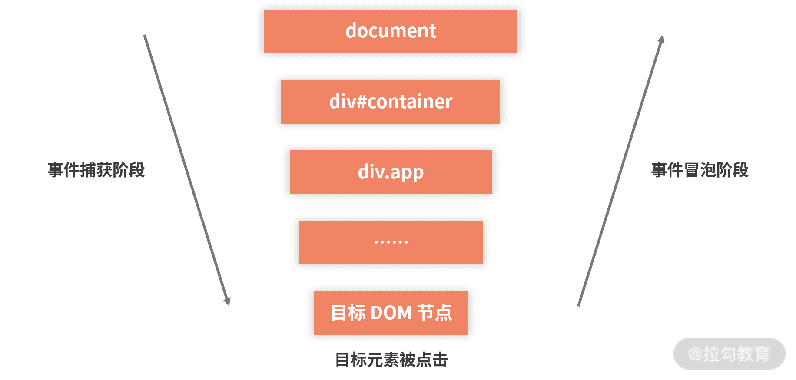
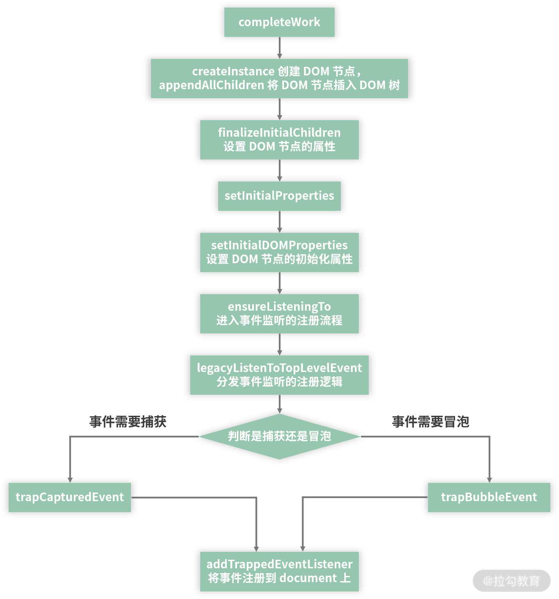

JavaScript 事件模型
在 JavaScript DOM 事件模型中，事件的传播分为三个阶段：
1.事件捕获阶段
2.目标阶段
3.事件冒泡阶段
因而，对于大部分事件类型，当子元素发生事件时，只要父元素通过监听相同的事件类型，也能知道子元素事件的发生。

事件委托
有 1000 个处于同个层级元素，点击某个元素就将他们的内容 console.log 出来，可以怎么做？最笨的方法是对每个元素对进行click事件的监听，绑定回调函数。这种方法麻烦，如果我们利用 JavaScript 事件模型的特点，对这 1000 个元素的父元素绑定 click 事件绑定回调函数，通过event.target 也能获取到当前点击的元素， console.log event.target.innerHTML 即可达到我们的目标。
React 合成事件机制
React 合成事件机制就是利用事件委托，将事件代理到 document；当事件发生时，根据获取到的 event.target，获取捕获阶段和冒泡阶段的 DOM 和回调函数，然后将 SyntheticEvent 作为参数传给各个回调函数并执行。总结一下，可分为事件收集和事件分发。
事件收集
事件收集是在 React 源码中 的completeWork完成的。一种事件类型，即使元素监听，存在多个回调，也只需要在 document 上注册一次即可，表明 document 需要此事件发生时执行回调，其本质是调用dispatchEvent函数。
事件执行
事件执行是在事件触发时，收集回调函数，并执行的过程。其收集过程如下，通过traverseTwoPhase和event.target收集实例和回调。1
2
3
4
5
6
7
8
9
10
11
12
13
14
15
16
17
18
19
20
21
22
23
24
25
26
27
28
29
30
31
32
33
34
35
36
37
38
39function traverseTwoPhase(inst, fn, arg) {
// 定义一个 path 数组
var path = [];
while (inst) {
// 将当前节点收集进 path 数组
path.push(inst);
// 向上收集 tag===HostComponent 的父节点
inst = getParent(inst);
}
var i;
// 从后往前，收集 path 数组中会参与捕获过程的节点与对应回调
for (i = path.length; i-- > 0;) {
fn(path[i], 'captured', arg);
}
// 从前往后，收集 path 数组中会参与冒泡过程的节点与对应回调
for (i = 0; i < path.length; i++) {
fn(path[i], 'bubbled', arg);
}}
React 合成事件机制优点
- 抹平不同浏览器的差异
通过合成事件，想开发者暴露统一的、稳定的、与 DOM 原生事件相同的事件接口。开发者不必关注琐碎的底层兼容问题，可以专注于业务逻辑的开发。 - 自研事件系统使 React 牢牢控制事件处理的主动权。
合成事件可以让 React 在处理 DOM 事件时，不必被 DOM 原生事件模型束缚。